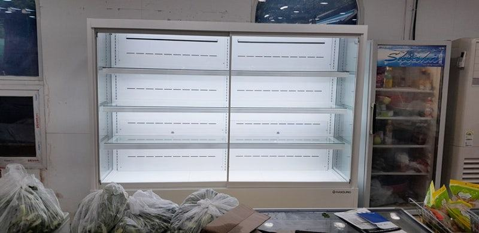
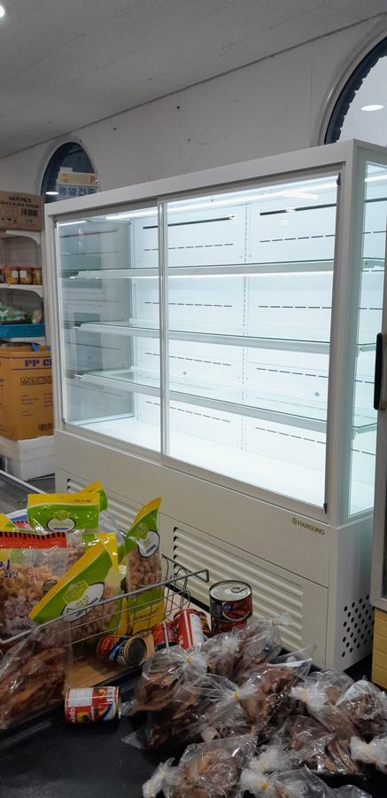
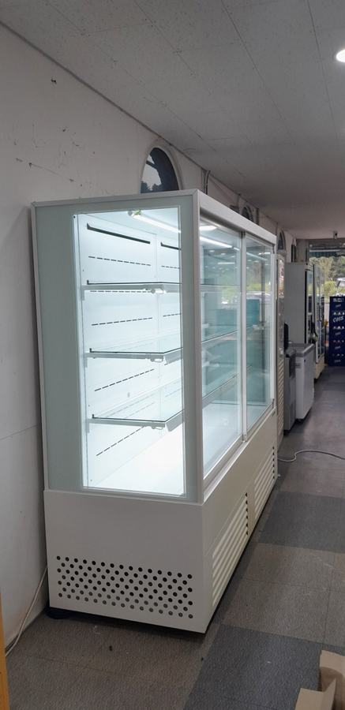
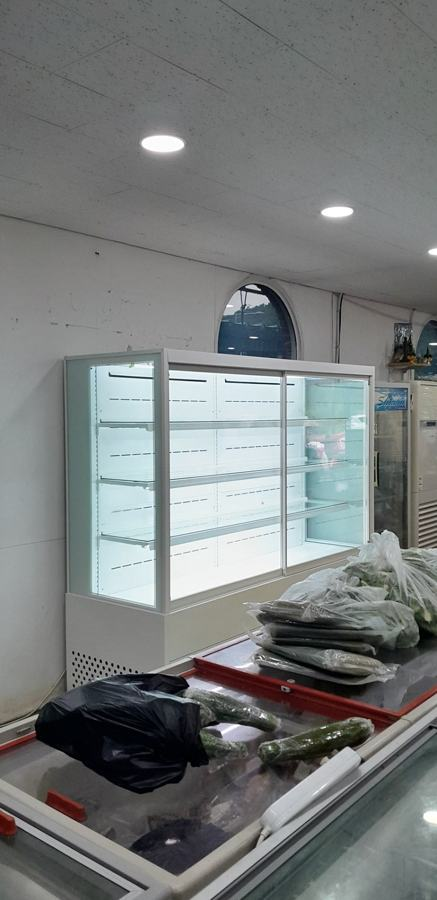
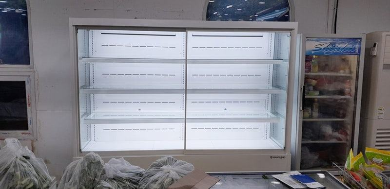
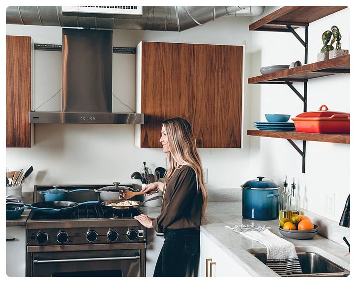
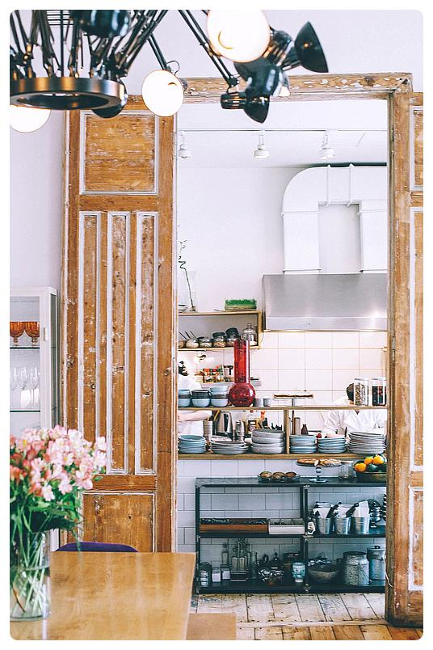

과일진열쇼케이스
야채쇼케이스 관리, 매일·매주 해 두면 좋은 루틴

야채쇼케이스는 매일 시든 잎과 흙을 걷어 내고 배수구와 냉기 토출구를 확인하는 것, 매주 선반을 빼서 씻고 기계실 먼지를 털어 내는 것만 지켜도 채소 상태가 눈에 띄게 오래갑니다. 채소에서 나오는 흙과 물기가 다른 진열 장비보다 많기 때문에 배수와 청소 주기가 특히 중요합니다.
안녕하세요. 청과 매장과 마트의 야채 진열대를 맞춤 제작하는 한성쇼케이스입니다.
새벽에 받아 온 상추와 시금치가 오후만 되면 축 처지고 잎 끝이 누렇게 변해 결국 따로 빼 두게 된다는 고민을 많이 듣습니다.
채소를 고르는 눈은 확실한데, 진열대에 올리고 나서 상태가 빨리 떨어지는 거죠.
야채쇼케이스는 흙 묻은 뿌리채소와 물기 많은 잎채소가 함께 올라가는 장비라 다른 쇼케이스보다 쉽게 더러워지고, 그 영향이 바로 채소 신선도로 이어집니다.
오늘은 야채쇼케이스를 깨끗하고 차갑게 유지하기 위한 관리 루틴을 매일 할 일과 매주 할 일로 나눠 정리해 드리겠습니다.
1. 매일 영업 전: 진열 상태와 냉기 길
아침 진열을 시작하기 전에 상단 토출구와 하단 흡입구 앞에 채소 상자나 비닐이 걸쳐 있지 않은지 먼저 보세요.
야채쇼케이스는 냉기가 위에서 아래로 흐르며 막을 만들어 바깥 열기를 막고 습기를 붙잡아 두는데, 이 길이 막히면 앞줄 채소부터 마르기 시작합니다.
새로 들어온 채소는 뒤쪽에, 먼저 들어온 채소는 앞쪽에 두는 선입선출도 매일 지켜 주세요. 같은 날 들어온 상품이라도 냉기가 세게 닿는 칸에는 단단한 채소를, 바람이 부드러운 칸에는 잎채소를 두면 손실이 줄어듭니다.
- 토출구·흡입구 앞 막힘 확인
- 먼저 들어온 채소를 앞쪽으로
- 잎채소는 바람이 부드러운 칸에
2. 매일 마감 후: 잎 부스러기와 흙 걷어 내기
하루 영업이 끝나면 시든 잎과 떨어진 잎 조각, 뿌리채소에서 털린 흙을 걷어 내 주세요. 이 부스러기가 선반 아래로 떨어져 배수구에 모이면 물이 빠지지 않고 고여 냄새가 나고, 바닥으로 물이 넘치기도 합니다.
물을 뿌려 신선도를 유지하는 매장이라면 선반 위에 고인 물도 마감 때 닦아 두셔야 합니다. 고인 물에서는 세균이 번식하기 쉬워 다음 날 채소에 그대로 옮겨 갑니다.
영업 후 나이트커버를 내려 두면 밤사이 습기와 냉기가 빠져나가는 것도 줄일 수 있습니다.


3. 매주: 선반 세척과 배수구 청소
일주일에 한 번은 채소를 비우고 선반과 받침을 빼서 중성세제로 씻은 뒤 완전히 말려서 다시 끼워 주세요.
흙이 끼기 쉬운 모서리와 선반 받침 홈을 특히 신경 써서 닦아야 합니다.
배수구는 거름망이 있다면 꺼내 털어 내고, 배수구 안쪽에 걸린 잎 조각을 확인해 주세요. 물이 잘 빠지지 않는다고 날카로운 도구로 쑤시면 배수관이 손상될 수 있으니 부드러운 솔을 쓰시는 게 안전합니다.
- 선반·받침 분리 세척 후 완전 건조
- 배수구 거름망과 입구 정리
4. 정기적으로: 기계실 먼지와 조명·유리
청과 매장은 박스 먼지와 흙먼지가 많아 기계실 응축기에 먼지가 금방 쌓입니다. 전원을 끄고 솔과 청소기로 털어 내면 냉각 효율이 돌아오고 전기 사용도 줄어듭니다.
조명이 일부 꺼졌거나 유리에 물때가 끼면 채소 색이 탁해 보입니다. 열이 적은 백색 LED가 고르게 켜져 있는지, 유리 결로가 반복되지 않는지 함께 살펴보시고, 관리를 해도 온도가 잘 유지되지 않으면 점검을 요청해 주세요.
체크리스트
- 토출구·흡입구 막힘 확인
- 선입선출 진열
- 시든 잎·흙 마감 정리
- 선반 위 고인 물 닦기
- 주 1회 선반·배수구 청소
- 응축기 먼지와 조명 점검
현장에서 자주 보는 경우: 일반 냉장고에 잎채소를 두다 금방 변색되는 매장
일반 냉장고로도 충분할 거라 생각하고 시작했는데 엽채류와 청과류가 유독 빨리 변색된다는 상담이 많습니다.
운영을 잘못해서가 아니라, 일반 냉장고는 온도를 낮추는 데 집중해 차가운 바람을 식재료에 직접 보내기 때문에 겉면이 마르고 문을 열 때마다 온도가 크게 흔들리는 구조이기 때문입니다.
야채쇼케이스는 냉기를 부드럽게 순환시키고 위에서 아래로 흐르는 에어커튼으로 바깥 열기를 막으면서 습기를 붙잡아 둡니다.
그래서 장비를 고르실 때는 외함 단열, 열이 적은 백색 LED, 냉기가 구석까지 닿는 선반 구조, 결로를 막으면서 투명한 강화유리를 확인하시고, 들인 뒤에는 오늘 정리한 관리 루틴으로 그 구조가 제대로 작동하게 지켜 주시는 것이 좋습니다.







자주 묻는 질문
채소에 물을 뿌려 두면 더 싱싱한가요?
잎채소 표면 수분을 지키는 데 도움이 될 수 있지만, 물이 선반에 고이면 위생 문제가 생깁니다. 물을 쓰신다면 마감 때 고인 물을 꼭 닦아 주세요.
배수구에서 냄새가 나요. 어떻게 하나요?
대부분 잎 조각이나 흙이 배수구에 걸려 물이 고인 경우입니다. 거름망과 입구를 청소하고, 그래도 물이 고이면 배수관 점검을 요청해 주세요.
청소 중 문제가 발견되면 어디로 연락하나요?
대표전화 031-986-2458로 연락 주시면 됩니다. 한성쇼케이스는 전국 240여 개 A/S 센터를 운영하고 있어 가까운 곳에서 점검을 받으실 수 있습니다.
매장 조건에 맞춰 만드는 한성쇼케이스
원하시는 제품 사진과 설치할 공간 사진만 보내 주셔도 매장에 맞는 구성을 추천해 드립니다.
- 전국 240여 개 A/S 전담 센터 운영
- 본사 대량 자재 매입으로 품질 대비 합리적인 가격
- 유럽제·삼성 냉각 콤프레셔 적용
- 국내 최초 쇼케이스 전문 디자이너 상주
매장 폭과 원하는 진열 구성을 알려 주세요. 실측과 견적을 안내해 드립니다.
031-986-2458